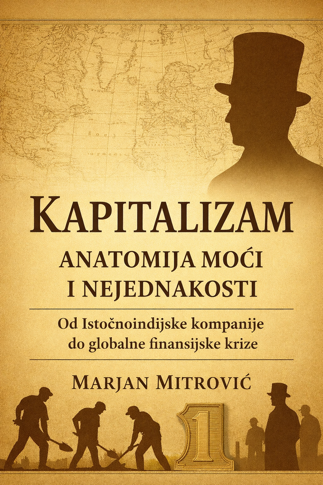

Kapitalizam: Anatomija moći i nejednakosti
Ova knjiga predstavlja analitičko i istorijsko seciranje kapitalizma kao sistema moći, a ne samo ekonomskog modela. Autor razmatra kako su neoliberalne reforme, privatizacije i globalizacija oblikovale savremena društva, stvarajući duboke socijalne razlike, političku manipulaciju i krizu identiteta. Kroz istorijske primere, političku analizu i savremene geopolitičke procese, knjiga postavlja pitanje: da li je kapitalizam sistem slobode — ili sofisticirani mehanizam kontrole?